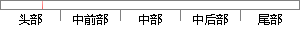

工作模式 用户模式 系统模式 管理模式 中止模式 未定义模式 外部中断模式 快速中断模式
片段位置图

相似结果
相似片段：一种是主动模式,即不在上位机控制F工作;一种是从动模式,即在上位机控制下工作...;用户模式、快速中断模式、中断模式、管理模式、中止模式、未定义模式和系统模式...
| 标题 | 《高温超导磁悬浮车悬浮高度测量仪的研制》 |
| 对比库 | 中国学位论文全文数据库 |
| 作者 | 李晓东 |
| 机构 | 西南交通大学 |
| 分类 | 计算机应用技术 |
| 年份 | 2005 |
| 相似率 | 94.59% （严重抄袭） |
※ 片段修改建议 ※
近似词参考：- 系统：体系
- 工作：事情
- 中止：中断
- 中断：间断 中止 停止
系统自动生成语句：事情模式 用户模式 体系模式 管理模式 间断模式 未定义模式 外部间断模式 快速间断模式
注：本片段修改建议为系统自动生成，仅供参考。